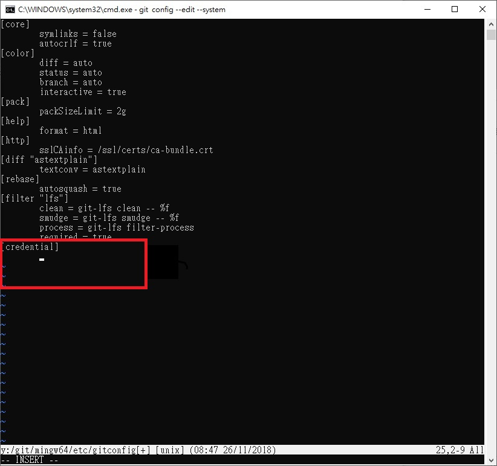
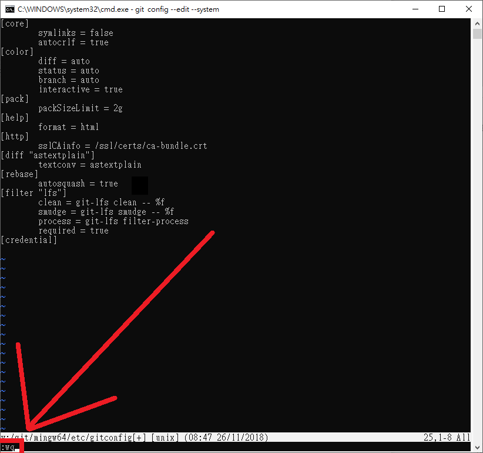

ungit上傳資料 << Previous Next >> V-rep
ungit上傳資料 << Previous Next >> V-rep
SSH Public Key
(一)關閉操作系統儲存 Github 帳號密碼設定
1.使用指令「git config --edit --system」，帶出 vi 編輯器。
2.編輯 git 指令所使用的系統設定(按鍵H,J,K,L對應控制左下上右)。
3.按a進入編輯模式，編輯模式最底下會顯示「-- INSERT --」。

4.按BACKSPACE刪除最後一行如下圖。

5.刪除完按ESC鍵離開編輯模式。
6.輸入「:wq」存檔並關閉。

(二)建立 OpenSSH 格式的 Private 與 Public Keys
ungit上傳資料 << Previous Next >> V-rep